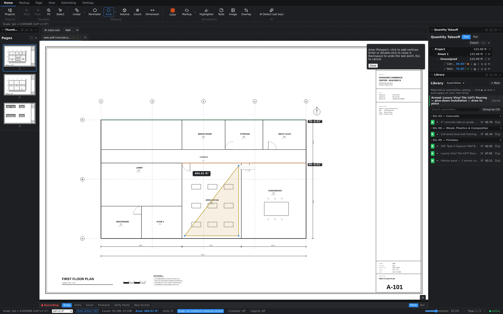

All six tools live on the Home tab, right after Select. Every measurement you commit gets a subject, lands in the Quantity Takeoff tree, and rolls up into live totals. Here's the lineup.
Linear — length along a path
Wall runs, pipe, conduit, curb, baseboard. Click to drop vertices along the path; the running length updates in the label and the status bar as you go. Right-click to finish. Reports in linear feet.

Perimeter — distance around a shape
Slab edge forms, roof edge, fencing. Same drawing motion as Linear, but the shape closes and reports the full distance around it in LF.
Area — surface inside a boundary
Flooring, paint, drywall, paving. Click around the boundary; a live SF readout tracks the polygon as it forms, and a tooltip reminds you of the mechanics: click to add vertices, double-click to close.


Volume — area with depth
Concrete slabs and footings, excavation, fill. Draw it like an area, give it a depth, and it reports cubic quantity. A 112 SF break-room slab becomes yards of ready-mix without leaving the sheet.
Count — how many of a thing
Doors, fixtures, receptacles, workstations. One click, one marker, and the tally climbs — all markers under one subject stay grouped in the tree. Counts also power AI detection when you'd rather not click 400 times.

Dimension — one verified distance
Not a quantity — a check. Snap a Dimension across a room or a grid bay to confirm a width, or to prove the sheet's stated scale is true before you trust it. The quiet workhorse of accurate takeoffs.
Drawing mechanics worth knowing
- Click-click or drag-to-draw. Click to place each vertex, or press and drag to draw in one motion — both work on the drawing tools. Use whichever your hand prefers.
- Right-click finishes a run. For multi-point tools, right-click commits what you've drawn. Areas close with a double-click.
- Subject at commit. When you finish, Groundwork asks for a subject ("Framing", "Open Office Flooring"). Name things the way your estimate reads — subjects become the rows you'll price.
- Snap and the status bar. While drawing, the status bar shows snap state and a live readout of the measurement in progress, so you always know what you're about to commit.